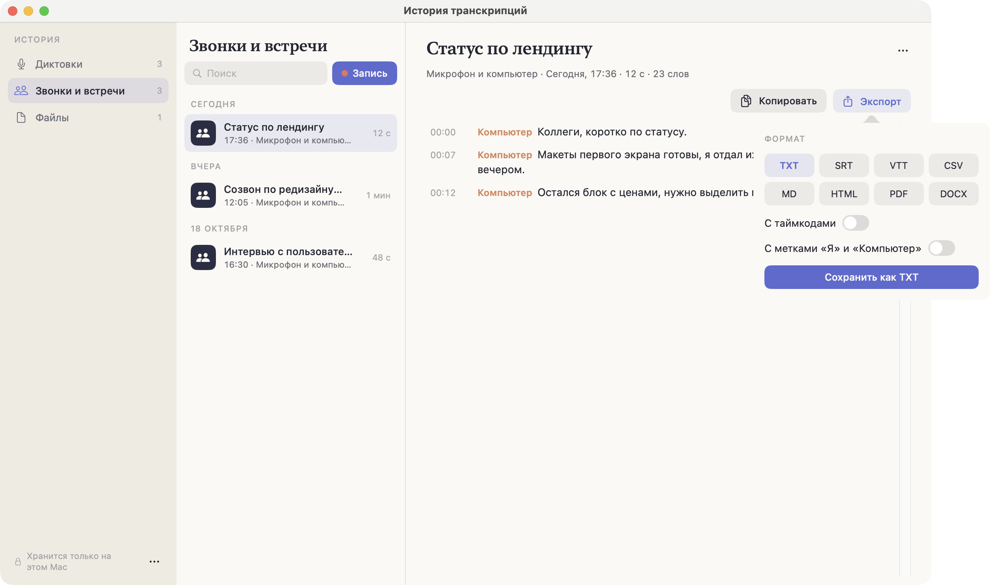
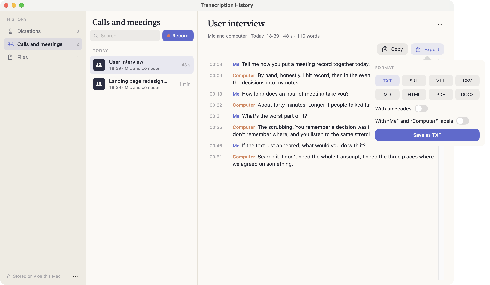

ЭкспортExport
Любую расшифровку можно выгрузить в восемь форматов — от простого текста до субтитров и документа Word.Any transcript can be exported to eight formats — from plain text to subtitles and a Word document.
Как выгрузитьHow to export
Откройте запись в Истории и нажмите «Экспорт». Выберите формат, при необходимости включите «С таймкодами» и сохраните файл.
Рядом есть «Копировать» — если текст нужен не файлом, а сразу в письмо или задачу.
Open an entry in History and press Export. Pick a format, switch “With timecodes” on if you need them, and save the file.
Next to it there is Copy — for when you want the text in an email or a task rather than in a file.


ФорматыFormats
| ФорматFormat | Когда нуженWhen you need it | ДоступAccess |
|---|---|---|
| TXT | Просто текст — вставить в заметку, письмо, задачу.Plain text — paste into a note, an email, a task. | БесплатноFree |
| SRT | Субтитры для видео. Самый распространённый формат.Video subtitles. The most common format. | Pro |
| VTT | Субтитры для веба, формат HTML5-плееров.Web subtitles, the HTML5 player format. | Pro |
| CSV | Таблица: реплики строками, чтобы разобрать в Excel или Google Sheets.A table: one line per entry, to work through in Excel or Google Sheets. | Pro |
| Markdown | Для Obsidian, Notion и всего, что понимает разметку.For Obsidian, Notion and anything that speaks markup. | Pro |
| HTML | Готовая страница — отправить ссылкой или открыть в браузере.A ready page — send it as a link or open it in a browser. | Pro |
| Когда расшифровку надо отдать «как есть» и без правок.When the transcript goes out as-is and must not be edited. | Pro | |
| DOCX | Word: протокол встречи, который будут дорабатывать руками.Word: a meeting record someone will keep working on. | Pro |
Если нужен просто текст, экспорт можно не открывать: расшифровки и без того хранятся как .txt в папке расшифровок.If plain text is all you need, you can skip Export: transcripts are already kept as .txt in the transcripts folder.